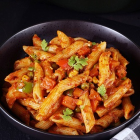

← All recipes
Masala Pasta Recipe (Indian Style Pasta)

Servings: 2 · Prep: 15 minutes · Cook: 15 minutes
Ingredients
- 2 cups pasta
- 2 tablespoon olive oil or butter (divided) (adjust to taste)
- ½ teaspoon cumin seeds (jeera)
- 3 cloves garlic chopped finely
- ⅓ teaspoon salt (+ ½ tsp for boiling pasta)
- ½ teaspoon red chili powder (adjust to taste)
- ½ teaspoon garam masala or pav bhaji masala or any other masala powder
- ½ teaspoon kasuri methi (or 2 tbsps coriander leaves)
- 2 tablespoon cream as needed (optional)
- 1 large onion chopped finely
- ¾ to 1 cup tomatoes chopped mashed or pureed (do not use very sour tomatoes)
- 2 carrots chopped or as needed
- ¼ to ½ cup green peas
- ¼ cup capsicum (bell pepper) – chopped
Directions
- In a large pot, bring 6 cups of water to a boil.
- When the water begins to boil rapidly, add half teaspoon salt and pasta.
- Cook till al dente on a medium to high flame.
- I suggest referring the instructions on the pack of pasta.
- While the pasta cooks, rinse and chop the veggies.
- Drain off the pasta to a colander when done and rinse in cold water.
- Set aside. Reserve 3 to 4 tablespoons of pasta cooked water.
- How to make masala pasta
- Heat 1 tablespoon oil in a pan. When the oil turns hot, add cumin.
- When they begin to splutter, then add finely chopped garlic.
- Fry till it begins to smell good for a minute or two.
- Add onions and fry until they turn pink.
- Then add chopped veggies and fry for about 2 minutes.
- Next mash the tomatoes well and add it to the pan along with salt.
- Cook until the tomatoes turn soft and blend well with veggies. The raw smell of tomatoes should disappear.
- Add kasuri methi, red chili powder and masala powder.
- Stir well and fry for a minute. Switch off the stove. If using cream add now and stir.
- Add cooked pasta and 1 tablespoon oil. Toss well. Adjust salt as needed.
- Add coriander leaves. If the pasta looks dry, then pour 1 to 2 tablespoons pasta cooked water.
- Serve masala pasta hot.
- In a large pot, bring 6 cups water to a rolling boil. Add one teaspoon salt, a few drops of oil (optional) and pasta.
- Cook till al dente on a medium flame. I suggest referring the instructions on the pack of pasta for the correct timings. It takes 8 to 9 mins to cook penne.
- While the pasta cooks, rinse and chop the veggies.
- When the pasta is cooked to al dente, reserve ¾ cup pasta cooked water in a cup and drain the pasta off to a colander. Optionally if you want you may rinse them under running water.
- How to make Masala Pasta
- Heat oil & butter (optional) in a pan. When the oil turns hot, add cumin seeds & let them splutter.
- Stir in the garlic and ginger & saute for a minute.
- Add onions and sauté them on a medium high heat until they turn golden.
- Add chopped veggies and fry for about 2 to 3 minutes. Stir in the ground spices & salt.
- Time to add the tomatoes & the ketchup/ passata (optional). Mix well and cook on a medium heat until the tomatoes cook down and the raw flavor of tomatoes is gone. You will also see oil begins to separate from the masala & the veggies are cooked through. Else cover & cook on a low heat.
- Pour ¼ to ½ cup pasta cooked water or plain water. Mix well & cook for a few minutes, until the sauce turns thick & saucy. (Do not over cook)
- Stir in kasuri methi & cooked pasta. Taste test & adjust salt. Cover and cook on a medium heat for 2 to 3 mins, until the pasta turns hot & steaming.
- If you want you may stir in heavy cream or grated cheese.
- Garnish masala pasta with coriander leaves. Serve hot.
Notes
You may leave out the mixed veggies – carrot, bell peppers, peas & corn from the recipe and make the basic masala pasta.
Tomato ketchup/ passata/ store bought bottled tomato puree/ tomato paste is used for a umami flavor. Adjust the quantity to suit your taste. You may add more when you stir in the pasta to the sauce.
For a creamy taste, you can add 2 to 4 tablespoons heavy cream or cooking cream. Alternately blend 15 soaked cashews or 4 tablespoons of almond flour with 4 tablespoons of water in a small chutney grinder. You will need to add 2 to 4 tbsps more water & blend again until you get a smooth cream. Stir 2 to 3 tbsps of this after you switch off the stove.
You can also make the masala ahead and refrigerate for 2 days. Heat up with a splash of water and add the cooked paste.
Original source: indianhealthyrecipes.com